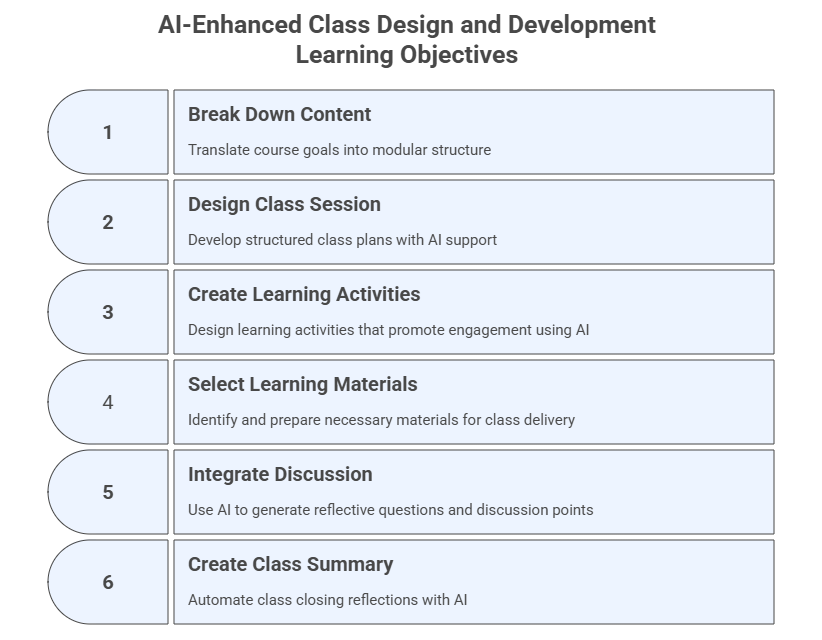

3. AI-Enhanced Class Design and Development#
Designing individual class sessions that align with course goals and engage participants with AI-enhanced learning experiences.
This module is about structuring the learning experience for clarity, engagement, and progression. It involves breaking down content into modules or units, designing individual class sessions with defined objectives, contents, and materials, creating learning strategies, selecting and preparing learning materials, and integrating discussion and reflection elements. AI can be used here to help design session elements, find relevant scientific literature, generate content from sources, and create learning activities and materials.
Learning Objectives#
After completing this module, participants will be able to:
Break down content into structured modules.
Build session plans using prompt templates.
Generate literature-informed content, examples, activities.
Integrate multimodal AI-generated diagrams and artifacts.
Create an AI-powered class summary generator.

3.1 Break Down Content Into Modules or Units#
Purpose#
Translate course-level goals and outcomes into a usable modular structure that drives session planning, scaffolding, and pacing.
Prompt Template — Instructional + Role-Based
You are an instructional designer working inside the [Workspace/Project Name].
Break down the course [Course Title] into modules or class sessions.
For each module, provide: 1) title, 2) description, 3) key concepts,
4) materials, 5) applications, and 6) reflection.
Ground your proposal in the uploaded syllabus and course outcomes.
Additional Prompt Variant — Instructional
I am creating a modular course called [Course Title] for higher education students.
Propose a structure with a title and description for each module, progressing from foundations to application and reflection.
3.2 Design and Create a Class Session (Objectives, Contents, Materials)#
Purpose#
Develop structured, high‑quality class plans supported by AI: objectives, content, teaching strategies, timing, and required materials.
A. Direct Prompting on LLMs#
Task: Use the content generated by any LLM of your choice to create a presentation in a slide generator, e.g. Gamma.app or Power Point, by pasting the resultant text from the prompt.
Prompt Template — Instructional + Role-Based
You are an instructional designer working on the course [Course Title].
Design a 90-minute session for [Course Title] on the topic [Topic Name]. Include:
- Session objectives
- Sequence of activities with time estimates
- Key content outline
- Required materials
- How AI will be used during the session
- Optional multimodal artifacts (slides, diagrams, examples)
B. Prompting the AI Slide Generator#
Task: Accelerate production of professional-quality presentations and supporting visuals. Directly prompt the slides’ generator, e.g. Gamma.app, Canva, PowerPoint+Copilot, Scispace, Claude, check and refine the presentation produced.
Prompt Template — Slide Generator (Gamma, Canva, PPT+Copilot)
Generate a visually-engaging slide deck for a 90-minute class titled [Class Title].
Include objectives, diagrams, examples, teaching steps, risks, and interactive elements.
Prompt Template for Claude.ai
Generate a visually-engaging slide deck for a 90-minute class titled [Class Title].
Include objectives, diagrams, examples, teaching steps, risks, and interactive elements.
Create an interactive artifact.
Note 1: In Claude.ai you could have chosen Artifact -> New Artifact and selected one specific type, for example, Apps and websites to have an online presentation available for the students.
Note 2: In Copilot you can use menu Create -> Create a presentation.
C. Integrating Scientific Literature#
Task: Ground class content in peer‑reviewed research and provide academically reliable framing. Specific tools to be used:
SciSpace Literature Review (https://scispace.com/search)
Perplexity Academic (https://www.perplexity.ai/academic)
Consensus.app (https://consensus.app/)
Google Scholar Labs (https://scholar.google.com/scholar_labs/search)
Note 1: Other relevant tools for this task include Elicit (elicit.com), Scite (scite.ai), and Research Rabbit (researchrabitt.ai).
Note 2: There are various search engines focused on technical or scientific content, such as Semantic Scholar and the standard Google Scholar, which are useful but do not offer the AI prompt capabilities of the tools presented above.
C.1 SciSpace — Literature Review Mode
SciSpace works best with short, topic‑driven prompts and automatically generates summaries and many other information, including results, methods, limitations, objectives, datasets, and more.
Prompt — Topic Overview
For the topic on [Topic Name]: summarize the state of the literature, identify leading authors, and list the five most cited papers.
C.2 Perplexity — Academic Mode
Perplexity Academic produces fully cited syntheses and is strong for deep, research‑grade output.
Prompt 1 — Literature Synthesis
Synthesize the peer-reviewed literature on [Topic Name]. Include citations and identify the most robust evidence.
Prompt 2 — Annotated Bibliography
Create an annotated bibliography of the 10 most relevant academic papers on [Topic Name]. Include summaries, strengths, limitations, and relevance for class design.
Prompt 3 — Research Gaps
Identify three major gaps in the literature on [Topic Name].
Prompt 4 — Teaching Application Extraction
From the best available research, extract practical teaching applications of [Topic Name], including activity examples and risks instructors should consider.
C.3 Consensus.app — Research Summaries
Consensus is a research engine that generates synthesized, evidence-based answers directly from peer-reviewed papers. It can also perform deep search, draft an outline, and create a table.
Prompt 1 — Summary
What does the research say about [Topic Name]?
Prompt 2 — Extract Conclusions
Summarize the strongest conclusions from peer-reviewed studies on [Topic Name].
Prompt 3 — Compare Outcomes
Compare learning outcomes reported in studies using [Topic Name].
Prompt 4 — Practical Implications
Using research findings, list the practical implications of [Topic Name].
C.4 Google Scholar Labs — Research Overview
Google Scholar Labs is ideal for fast, concise academic summaries and trend detection.
Prompt 1 — Quick Overview
Provide a concise overview of the academic literature on [Topic Name].
Prompt 2 — Key Papers Summary
List the foundational papers on [Topic Name] and explain the contribution of each in one sentence.
Prompt 3 — Trend Identification
Identify recent trends in [Topic Name] based on highly cited papers since 2020.
Prompt 4 — Rapid Instructor Summary
Summarize what instructors should know about [Topic Name], grounded in recent academic research.
Cross-Tool Prompt#
A universal prompt usable across tools:
Using current peer-reviewed research, explain how [Topic Name] can be integrated into a 90-minute higher education class session.
Include: summary, benefits, risks, best practices, and citation-backed recommendations.
Comparative Table of AI Literature Tools#
Tool |
Type |
Best For |
Strengths |
Limitations |
Ideal Use in Module 3 |
|---|---|---|---|---|---|
SciSpace |
AI literature analysis |
Literature reviews & concept mapping |
Visual concept maps, citation tracing, theme extraction |
Needs short, topic-based queries |
Building conceptual diagrams & evidence maps |
Perplexity Academic |
LLM + search |
Deep research synthesis |
Cited responses, robust summaries, strong reasoning |
May over‑aggregate sources |
Generating lecture content grounded in research |
Consensus.app |
Evidence summarizer |
Quick synthesis of research findings |
Direct conclusions from papers, comparisons, consistency analysis |
Limited to indexed papers |
Rapid evidence summaries for teaching decisions |
Google Scholar Labs |
Search + AI summaries |
Rapid literature overview |
Fast topic summaries, trend detection |
Less detailed synthesis |
Quick background reading & preparation |
D. Generating Content from External Sources#
Task:
Use a generative model like Perplexity, NotebookLM, or SciSpace, to analyze some pre-selected sources of reference and create content from them. As example, you can use the papers below as your source material if needed or some of the papers you saved from your previous searches.
Example contents (papers) for a [Course on Teaching with AI] and the topic of [AI for Assessment and Feedback]:
Paper_1: Artificial intelligence for assessment and feedback to enhance student success in higher education. (Open Access)
Paper_2: Feedback sources in essay writing: peer-generated or AI-generated feedback? (Open Access)
Step 1: Preferably upload this material in your AI Workspace, but you can also create a new Notebook in NotebookLM or Library in SciSpace and title it “AI for Assessment and Feedback”.
Step 2: Upload your sources of reference (see files above) into the LLM.
Step 3: Prompt the LLM.
Prompt Template - Instructional
Using the attached material, design a 90-minute session for the course [Course Name].
The topic is [Topic Name].
Include session objectives and sequence of activities with time estimates and main contents.
Note: After generating your content from your sources, you can use it to create the slides as explained previously.
3.3 Create Learning Activities#
Purpose#
Use AI to design active learning activities that promote practical engagement with generative AI tools.
Prompt Template — Instructional + Role-Based
You are a faculty developer facilitating a session on [Topic Name].
Suggest three learning activities that help participants understand this topic.
Include instructions, timing, and required tools.
Note 1: If you already know the learning activities you are going to use, you can always employ an LLM to check, improve, provide ideas and create specific activities for you.
Note 2: Some LLMs offer features and artifacts that can be directly used to create learning activities. For example, Claude.ai allows you to create (interactive) artifacts (e.g., apps and websites, documents and templates, games, creative projects, quiz or survey) that can be used as learning activities by the students.
3.4 Select and Prepare Learning Materials#
Purpose#
Identify, generate, transform, and validate materials needed for class delivery.
Task 1: Search for and generate new learning materials#
Prompt Template
Suggest a list of materials for a class on [Class Topic]:
Include 1 reading, 1 hands-on tool, 1 AI-generated example,
and 1 multimodal artifact.
Task 2: Select and validate content and sources#
From all the materials generated in the previous steps, identify and validate those that can be used as part of your teaching component.
Note: The GenAI models should be used as assistants to support you in the process of planning, designing, and creating your course, but you must ensure everything is accurate and ready to be presented in class. The scientific content retrieved and analyzed in Section 3.2C may be particularly relevant to become part of the content for your course.
3.5 Integrate Discussion and Reflection Elements#
Purpose#
Use AI to generate reflective questions and discussion points that deepen understanding.
Prompt Template — Few Shot
Examples of reflective questions:
1. What are the potential benefits and risks of using AI-generated feedback?
2. How would you explain the role of AI to your students?
Generate 3 reflection questions that promote critical thinking about [Course Topic].
3.6 Create an AI-Powered Class Summary Generator#
Purpose#
Automate class closing reflections using AI-generated summaries.
Prompt Template — Instructional
Write a 1-paragraph summary of key takeaways from today's class using the notes or transcript provided.
Include the main concepts, examples, tools used, and next steps for students.
Meta-Prompting
Write a prompt I can give to an LLM at the end of each class to generate a 1-paragraph summary of key takeaways based on notes or transcripts from a session on [Course Topic].
3.7 Updates to Your AI Workspace and Personalized Assistant#
This section summarizes the main updates to your AI Workspace (Project) and Course Personalized Assistant (PA) to ensure both tools evolve consistently as you progress in this program.
A. Updates to Your AI Workspace (Project)#
Upload New Files to the Workspace Knowledge Base: all materials (e.g., modules, class sessions, slides) generated or selected in this module.
Update Workspace Instructions: modify the Project’s instruction block to reflect new responsibilities.
Add under Capabilities:
- Structured session plan generation
- Learning material creation
- Multimodal artifact generation
- Literature-grounded content synthesis
Add under Behaviors:
- Validate accuracy of AI-generated materials
- Flag inconsistencies or missing content
B. Updates to Your Course Personalized Assistant (PA)#
Upload New Files to the PA Knowledge Base: all content and learning materials generated or selected in this module.
Update PA Instructions:
Add under Capabilities:
- Explain class concepts at multiple difficulty levels
- Generate practice questions based on session materials
Add under Safety & Boundaries:
- Avoid generating full solutions for graded assignments
Note: Have a look at Section 2.7C for instructions on workflow adjustments going forward each module.
3.8 Exercises#
Exercise 1 — Break Down Your Course Into Modules#
Goal: Structure your course into modules or sessions.
Steps:
Paste your syllabus or course description into the Workspace.
Use the module‑creation prompt.
Review the proposed modules.
Request alternative versions (basic, standard, advanced).
Prompt:
Break the course into modules with titles, descriptions, and key concepts.
Exercise 2 — Design a Complete 90-Minute Class Session#
Goal: Produce a structured lesson plan using generative AI.
Steps:
Select one module from Exercise 1.
Use the session‑design prompt.
Request two more variants (online, hybrid).
Ask the model to create a slide deck outline.
Prompt:
Design a 90-minute class session with objectives, activities, and materials.
Exercise 3 — Generate Learning Activities#
Goal: Create AI-supported activity plans that promote active learning.
Steps:
Choose a class topic.
Use the activity-generation prompt.
Request variations for different complexity levels.
Exercise 4 — Generate and Validate Learning Materials#
Goal: Use AI to produce readings, examples, tools, and teaching aids.
Steps:
Run the materials prompt.
Request multiple formats (summary, table, example, visual).
Validate outputs manually for accuracy.
Exercise 5 — Create a Class Summary Generator#
Goal: Build a reusable summary generator prompt.
Steps:
Copy the summary prompt.
Run it on an example transcript or your own notes.
Ask for three versions: bullet list, student-friendly, expert-level.
3.9 Reflection#
Which class-design tasks benefited most from AI?
Where did human oversight become essential?
How could multimodal AI tools enrich the learning experience?
What tasks should remain strictly human-led?